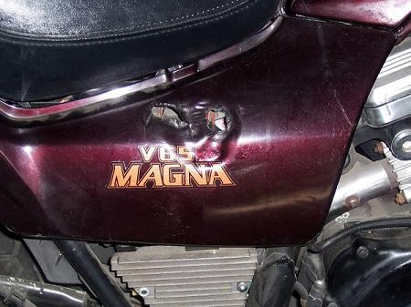

Regulator / Rectifier
(3 Yellow Wire Fix)

Connector Meltdown
Common in all SabMags. The cause is a somewhat wimpy connector that would probably be OK if it never got dirty or corroded, but it does, with resulting overheating.
Solutions:
- Honda sells an "ACG connector repair kit" for around $15 list. Some list members report this works well, others that the replacement also failed.
- Replace the connector with crimp-on spade or bullet connectors. Some list members report success, others that this also fails unless the connectors are soldered.
- Dispense with the connectors altogether, solder the wires, and cover them with shrink tubing. This appears to totally eliminate the problem. Mild disadvantage on Magnas (though not 87 and 88 "Super" Magnas): to remove the battery you have to remove both the bottom and top bolts of the battery retaining bracket, to which the regulator/rectifier also is mounted. BTW it doesn't matter if you get the 3 yellow wires from the alternator mixed up from the way they originally were.
Rectifier Connector Mod
Regulator / Rectifier Connector Mod (with pics)
How It Works
(from Bob Peloquin)
I feel I should share some useful information I've picked up about the general operating principles of our alternators and regulator/rectifiers. There has been a lot of recent list activity lately with some rather strange conclusions being drawn and I'd like to help set the record straight. Please don't flame me if you disagree, I'm trying to HELP, not piss people off.
The V4 (and most of Honda's other motors, I think) has a 3-phase, delta configuration, permanent-magnet alternator. This means that alternator voltage and current are directly proportional to engine RPM. There is no built-in method of regulating the output of this type of alternator as the magnetic field comes from rotating permanent magnets and not from a controllable electromagnet (as in a cage alternator). This type of alternator does not produce enough voltage/current to run all the accessories and lights at idle speed but it is small, simple, well-proven technology which has served Honda and most other M/C companies well over the years.
BTW, some of the newer Suzuki's use a small, cage-type alternator driven off the top of the transmission input shaft which has a rotating field and stationary 3-phase stator coil so it IS controllable (bet they don't have regulator failures & meltdowns).
The V4 has a combination rectifier and regulator which "shunts" the excess voltage and current produced by the alternator directly to ground through internal TRIAC semiconductors. These have a low resistance when active but some resistance still exists which is why the regulator/rectifier gets hot. At low engine rpm's the regulator portion does nothing at all and allows all the current to pass through the rectifier portion and into the battery and lighting systems of the bike.
- As RPM increases, so does the voltage and current coming out of the
alternator. At a preset voltage, usually around 14 - 15 volts, the TRIAC's are gated (activated) and begin chopping off the peaks of the sine-wave AC voltage coming from the alternator by connecting the windings to ground. At above 5000 RPM, most of the current produced by the alternator is being shunted to ground.
Where does all this current go, you ask. It heats up the alternator windings (which are cooled by engine oil), the regulator/rectifier, and unfortunately it also heats the electrical connectors and cause meltdowns when corroded connectors are present. On the late-model VFR's the regulator is inadequately cooled as Honda eliminated the finned heat-sink and just bolted the metal case to the frame in hopes that it would dissipate enough heat to keep it from frying. (in solid state electronics, cool = good).
This is an extremely simple design but it has several weaknesses that can cause catastrophic failure when components fail.
1. Bad regulator/rectifier can either short ALL current to ground causing alternator overheating and connector meltdown or it can short NONE to ground allowing unregulated high voltage to feed the rest of the system and burn up your battery and lights in a big hurry.
2. Bad connectors (high resistance) causes all the waste energy to heat the electrical connectors instead of the alternator windings until it melts and/or burns up the connectors.
3. Weak battery can cause regulator/rectifier to be overworked causing overheating and failure (battery acts as an additional regulating component as it's low internal resistance tends to try to keep voltage constant relative to it's state of charge)
Now, as for the other questions I've seen:
Some of you seem to be having difficulty with some of the concepts and terms, so here the explanations:
"I understand what a diode does. the clymer drawing shows a voltage regulator with rectifier and seperately a rectifier. The question came in because the drawing uses the symbol for a diode in the place labeled rectifier. What I have previously seen labeled as a diode is a solid arrow that butts up against a line perpendicular to the line that the arrow is on, like '->|-' "
A diode is a one-way valve for electricity.
A "bridge-rectifier" is a combination of 4 or more diodes in a configuration called a "Whetstone Bridge" which make AC voltage into pulsing DC voltage. This is also called a full-wave rectifier. Often, you'll see the two terms "diode" and "rectifier" used interchangeably. The Sab-Mag rectifier uses 6 diodes
The little symbol -->|-- is the schematic representation of a diode. The rule of thumb for current flow through a diode is that current flows against the direction of the arrow and current flows from negative to positive (none of you physics professors need jump in here with any of your "hole conduction" crap). If you look at the wiring diagram for your Sabmag you'll see a little diode symbol in the circuit between the clutch switch, neutral light, and the starter solenoid. The diode keeps the clutch switch from turning on your neutral light whenever you pull in the clutch.
"IIRC, the alternator produces three-phase AC. This needs to be first converted into pulsing DC. This is accomplished by a "rectifier bridge" or rectifier for short. This is normally a set of diodes in a specific patern. Then, there has to be a way to regulate this. So you create an electronic device that feeds back to the alternator, controlling the fields to keep the voltage somewhat constant."
Well, almost, but not quite right... See above: The permanent magnet alternator on a SabMag has no such feedback capability.
"And then you have the battery that acts as a huge capacitor that smooths the DC to a nice stable output."
Yup. (except it's more like a constant voltage capacitor)
OK, now I've got to get back to work.
Aftermarket Rectifier
The most common aftermarket rectifier is from Electrosport (www.electrosport.com).
The OEM rectifier has 8 wires attached to it. The Electrosport only has 7 wires - it eliminates the black OEM wire. The black wire is normally used as a voltage sensing input FROM the ignition switch. However, the Electrosport rectifier has it built in.
The mounting holes for the Electrosport are a bit different and you may have to re-drill the posts that the rectifier mounts to.